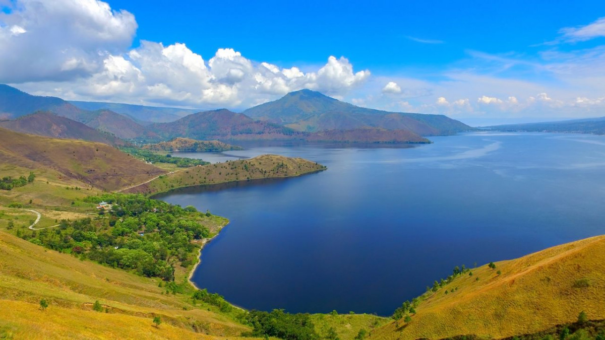

Destination
Popular
Candi BorobudurBorobudur adalah sebuah candi Buddha yang terletak di Borobudur, Magelang, Jawa Tengah, Indonesia. Candi ini terletak kurang lebih 100 KM di sebelah barat daya Semarang, 86 KM disebelah barat Surakarta, dan 40 KM di sebelah barat laut Yogyakarta |
||
Danau TobaDanau Toba adalah danau alami berukuran besar di Indonesia yang berada di kaldera Gunung Supervulkan. Danau ini memiliki panjang 100 Kilometer, lebar 30 Kilometer, dan kedalaman 505 meter. Danau ini terletak di tengah pulau Sumatera Utara dengan ketinggian permukaan sekitar 900 Meter |
 | |
Pantai KutaPantai Kuta adalah sebuah tempat pariwisata yang terletak di Kecamatan Kuta, sebelah selatan Kota Denpasar, Bali. Daerah ini merupakan sebuah tujuan wisata turis mancanegara dan telah menjadi objek wisata andalan Pulau Bali sejak awal tahun 1970-an |
Contact
Sent Us Massage
Jika butuh bantuan atau mengalami kendala dalam website kami, silahkan hubungi dalam kontak yang ada.
Website ini dibuat sebagai bagian dari tugas besar Dasar Pemograman Web dengan tujuan pengunjung mendapat berbagai referensi mengenai liburan yang akan anda kunjungi, tentunya kami menyediakan rekomendasi umum dan sangat eksotis untuk dikunjugi. Silahkan review perjalanan anda dalam kontak yang ada!!